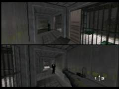
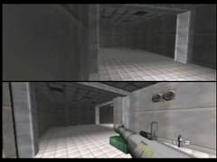

|
.
| Goldeneye
: Bunker |
Taille
- Bien bien
Gand, avec beaucoup de Longs Couloirs, le Bunker est une des plus Grands
NIveaux du Jeu. Faut pas oublier la Partie à l'exterieur, bien
que l'on n'y aille pas trop souvent. Un Excellent Niveau pour la marche
à pied. Décor - Froid et Fonctionnel, le Bunker n'est pas très joyeux. Heureusement, il est varié. Prison, Salle à Piliers, Salle de Controle, Exterieur, Radiateur, Conduit de Ventilation, c'est quand meme pas mal ! Les Portes avec des Fenetres sont GENIALES avec le Diviseur !!! Armes - Les Sniper sont à l'honneur, surtout avec le Diviseur qui fait un malheur. Tout ce qui est Mine est sympa, vu la Taille du Niveau. Les Pistols sont un peu légers pour les Grandes Salles, mais ça peut aller. Camping - Y a bien évidemment la Prison, et d'autres Salles fermées. On peut aussi camper dans un Coin des 2 Mini-Salles de la Salle de Controle. Se planquer derriere le Radiateur est Radicalement efficace, surtout si vous laissez les Portes Ouvertes. Personne ne vous voit ! |
 |

|
 |
La
Prison est un bon endroit pour coincer des Joueurs perdus qui y resteraient.
Les Explosifs sont très dangereux ici. |
La
Salle aux Colonnes est un bon endroit, du fait du Gilet qui y repose
dans un Coin. Un bon endroit pour le camping. |
La
Salle du Conduit de Ventilation est pas mal. En plus ce Pont au-dessus
de l'eau, le Ciel au-dessus, mignon. |
 |

|
 |
Le
Joueur du Bas est planqué contre le Radiateur. Invisible !! Idem
en Mode Solo. |
Le
Couloir Rouge et Bleu cache un Gilet. C'est un endroit assez sombre,
donc propice aux embusquades... |
La
Porte Coulissante a un Défaut: son bruit unique ! Meme avec un
Diviseur, dès que vous entendez ce bruit, foncez dénicher
l'ennemi ! |
 |
 |
 |
Les
Mini-Salles de la Salle de Controle, avec le recoin. Il y a souvent
dans le coin une très bonne Arme ! Chopez-là ! |
A
travers la Vitre, on voit bien des choses... Très utile avec
le Diviseur ! |
Une
des 3 Salles normales du Bunker. De bons endroits pour attendre des
Joueurs perdus !! |